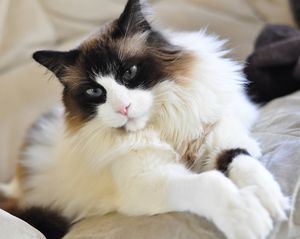

Порода очень быстро стала популярной в Европе – западному менталитету пришелся по душе «удобный» характер этих кошек.
Сейчас рэгдоллов активно разводят по всему миру, союзные же республики еще только ждут «бума» на необычную породу.

Рэгдолл – одна из самых крупных пород, признанных американской Ассоциацией любителей кошек (CFA). Представители породы отличаются довольно длинным телом и крепким костяком. Наличие шерсти между подушечками пальцев является одной из особенностей этих животных. Шерсть полудлинная, шелковистой текстуры. Хвост длинный и пышно опушенный. Голова у рэгдоллов широкая, с плавно скругленными очертаниями, выражение морды – дружелюбное, а глаза – голубые, глубоко посаженные. По окрасу кошки рэгдоллы бывают трех вариаций: колорпойнт, миттед и биколор. Только эти цвета признаны официально.
Дружелюбны и сообразительны, как собаки
По своему характеру рэгдоллы – кошки спокойные и уравновешенные, как правило, очень ласковые, тихие и сдержанные. Они чрезвычайно общительны, любят находиться в обществе человека. Эти кошачьи известны своей уживчивостью: они прекрасно ладят с другими домашними животными и, особенно, с детьми. Считается, что они дружелюбны и сообразительны, как собаки. Уровень активности у них средний: им достаточно всего нескольких минут в день, чтобы сбросить энергию в интенсивном режиме. В остальное время коты и кошки породы рэдголл предпочитают играть, лежа на спине.